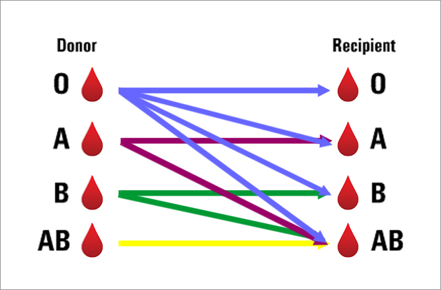

Home
Tips for a Successful Donation
Before Your Donation
In the days before your donation, eat healthy, iron-rich foods such as spinach, red meat, fish, poultry, beans, iron-fortified cereals and raisins. This will help maintain a healthy iron level. The number one reason for deferrals (especially women) is anemia
Get a good night’s sleep
At least 3 hours before donating, eat a balanced meal and avoid fatty foods, such as hamburgers, fries, or ice cream
Drink an extra 16 oz. of water and fluids before the donation; you can be deferred for dehydration
Remember that your system must be free of aspirin for three days (72 hours) or ibuprofen for 24 hours prior to donation
Remember to bring a valid photo ID, a list of medications you are taking, and a list of places you have visited outside of the U.S. in the past 3 years
During Your Donation
Wear clothing with short sleeves or sleeves that can be raised above the elbow
If you have a preference of arm or vein that you like the phlebotomist to use for your donation, let them know
Relax, listen to music, talk to others, or simply just catch up on some reading on our comfortable donor lounge chairs designed specifically for apheresis donations, which are equipped for our donors to surf the internet or watch movies
Enjoy an assortment of refreshments in our canteen area immediately after donating
After Your Donation
Drink plenty of fluids over the next 24-48 hours to replenish any fluids you lost during donation
Avoid strenuous physical activity or heavy lifting for about 24 hours after donation
If you feel light headed, lie down, preferably with feet elevated, until the feeling passes
If something doesn’t feel right, call the Donor Center’s toll-free number provided to you after your
donation
Enjoy your day and know that you have made a positive difference!
